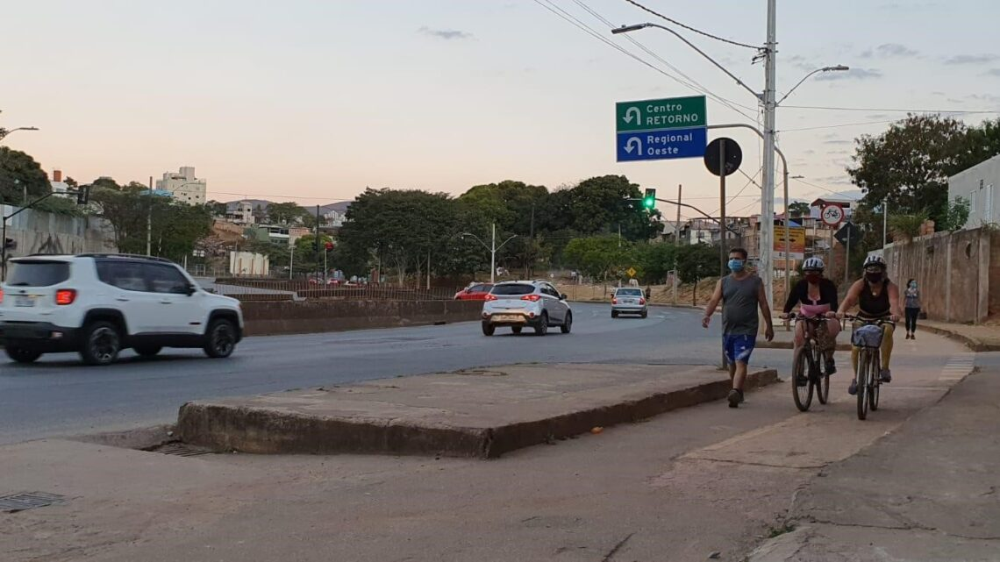

CICLISMO EM ALTA NA REGIÃO OESTE DE BH
PBH REALIZOU A CONEXÃO DE TRECHOS DE CICLOVIAS A 30KM DE NOVAS CICLOFAIXAS TEMPORÁRIAS, LIGANDO AS REGIÕES LESTE E OESTE À ÁREA CENTRAL E AO SISTEMA MOVE. Compartilhe JORNAL DAQUI BH — 31 DE AGOSTO DE 2020
Em horários de pico, é comum ver pedestres ao lado de ciclistas na ciclovia da Av. Tereza Cristina. |  Se comemora, no mês de agosto, o dia nacional do ciclista. Diante disso, a equipe do DaquiBH buscou analisar a situação do ciclismo em Belo Horizonte em tempos de pandemia. Sexta cidade mais populosa do Brasil, com aproximadamente dois milhões e quinhentos mil cidadãos, segundo o Instituto Brasileiro de Geografia e Estatística (IBGE), Belo Horizonte está localizada em uma área geográfica que possui característica de muitos morros e montanhas. Será que a prática do ciclismo como esporte e meio de transporte atrai a população da região Oeste? “A zona Oeste tem muitos morros e poucas ciclovias, mas uma bonita paisagem. Belo Horizonte é uma péssima cidade para quem deseja pedalar com poucas ciclovias, asfalto irregular e os motoristas que não respeitam a distância de segurança nem concedem prioridade aos ciclistas”, relata o estudante de Educação Física, Caio Scapolatempore, de 23 anos, morador do bairro Buritis.
INFRAESTRUTURA PARA CICLISTAS
Segundo a prefeitura de Belo Horizonte, até dezembro de 2017, a cidade criou 89,93 quilômetros de áreas destinadas ao ciclismo entre ciclovias, ciclofaixas e cicloruas. Na região Oeste, a opção de ciclovia está na Av. Teresa Cristina, segunda com maior extensão na cidade, com 4,63km, ficando atrás apenas da Av. Otacílio Negrão de Lima, que possui 19,11km. Segundo a coordenadora de Sustentabilidade e Meio Ambiente da BHTRANS, Eveline Prado Trevisan, em julho, a prefeitura viabilizou a conexão de trechos existentes de ciclovias, com trechos de ciclofaixas temporárias, em aproximadamente 30km, ligando as regiões Leste e Oeste à área central da cidade e ao Sistema Move. “Nosso objetivo é promover a ampliação dessa infraestrutura de forma constante a partir de agora”, diz. Segundo ela, a pandemia fez a bicicleta surgir novamente como uma alternativa importante para o deslocamento na cidade.
Em horários de pico, é comum ver pedestres ao lado de ciclistas na ciclovia da Av. Tereza Cristina. | Foto: Arthur Lobo. COMO ESTÁ A AV. TEREZA CRISTINA? Alan Prado, de 26 anos, morador do Jardim América, é Coordenador do Pedal Oeste e criou o grupo após a quarentena, que agora treina todas as quintas-feiras na Av. Tereza Cristina. Ele acredita que a alta procura por bicicletas neste período foi reflexo do fechamento das academias, centros esportivos e o baixo custo do esporte. Alan elogia os 30Km ampliados pela prefeitura. “Fica meu elogio para a parte criada próxima à Av. Amazonas, foi um triunfo, tomara que fique por definitivo”. Mas ele ressalva que a Av. Teresa Cristina tem graves problemas. Primeiro, a pista tem sido utilizada por pedestres, atrapalhando a circulação de bicicletas, obrigando os ciclistas a usarem a pista principal da via, além de estar com muitos buracos e entulhos. Morador da região do Betânia, Hudson Flavio, 21 anos, relata que após a quarentena ele começou a usar mais a sua bicicleta, andando em média 22,5 km por dia na Av. Tereza Cristina. Ele gosta da ciclovia da avenida, mas afirma que não é possível ser mais intenso, pois a ciclovia fica congestionada por pedestres em horário de pico. Eveline Trevisan reconhece que, nos últimos anos, foi difícil avançar com a implementação de infraestrutura para bicicletas na cidade, mas em contrapartida, o planejamento cicloviário avançou bastante. “Atualmente estamos desenvolvendo projetos para aproximadamente 70 km de novas ciclovias”, afirma a coordenadora de Sustentabilidade e Meio Ambiente da BHTRANS. O planejamento cicloviário da Prefeitura tende a tornar a cidade mais acessível aos ciclistas. | Imagem: Prefeitura de Belo Horizonte.
Site da notícia apresentada